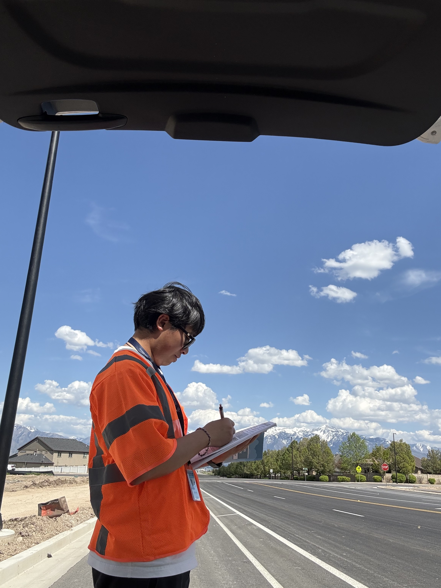
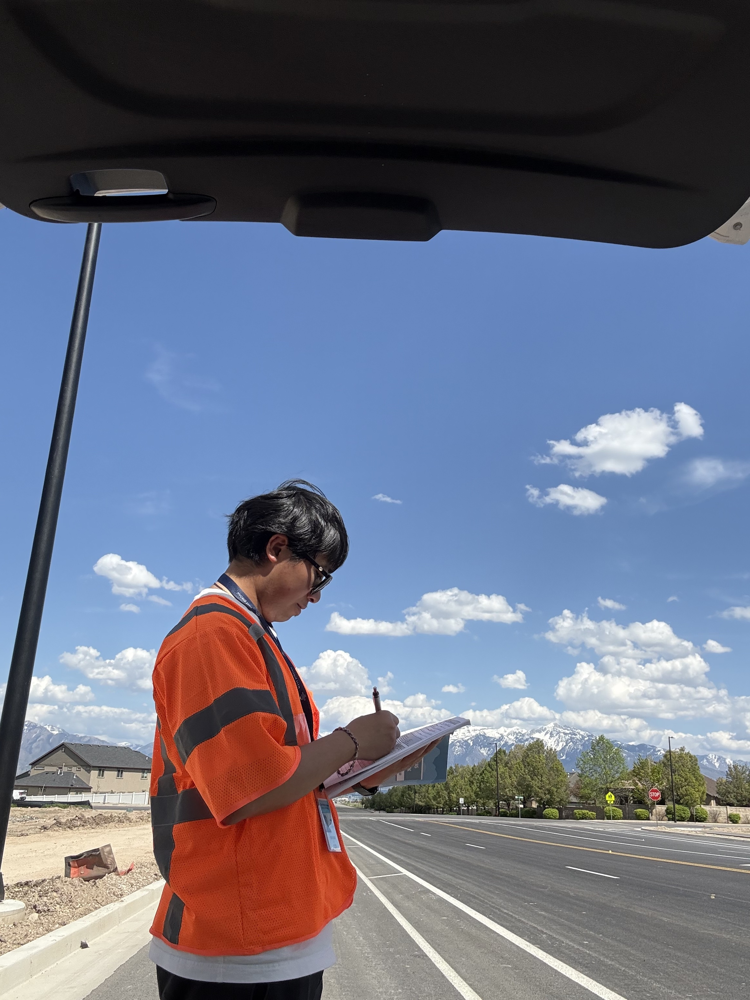
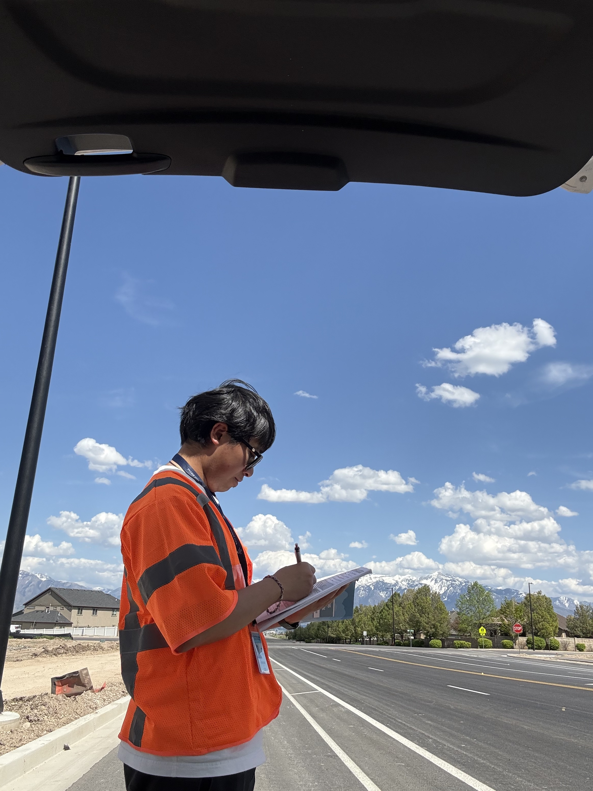

This drone mapping project captures the construction process of a water tank from January to May. Drone photos were collected at regular intervals to monitor construction progress and document site changes.
In addition to the aerial imagery, the gallery includes a field photo taken during an on-site inspection to provide ground-level context.
Skills Used: Drone Mapping, Construction Monitoring, Time Series Imagery, Field Documentation
